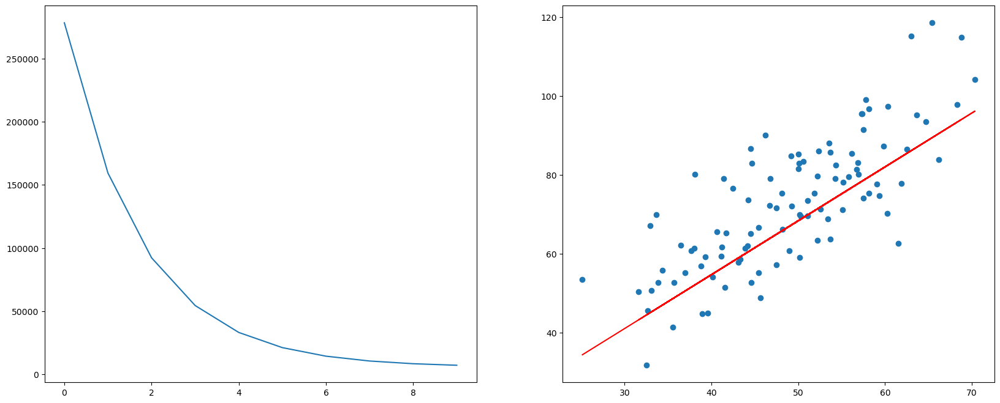

线性回归的目标函数
已知数据集 ，其中有 个 维样本 ， 代表第 个样本。每个样本 对应着一个目标值 ，或称标签。把目标值 的集合（向量）记作 。
我们试图去拟合一个线性函数 ： 使得 ，这就是线性回归。但显然线性函数本质上只是一条直线（2维）或者一个超平面（n维），并不太能让任意 满足 。只能退而求其次，找到一个尽可能接近真实情况的 。一旦有了这个 ，如果我们输入一个数据集 中不存在的样本 ，就可以求解一个预测值 达到机器学习目的。
线性回归的损失函数
如何度量所谓的尽可能接近真实情况呢？我们采用均方误差来度量。均方误差有非常好的几何意义，它对应了常用的欧式距离。均方误差越小，则说明该线性函数 越接近真实的情况。我们把均方误差函数作为线性回归的损失函数：
同样都作为线性函数 需要求解的未知参数，可以把 和 合并为一个向量 ，相应的需要把每一个样本 最后都增加一个 改写为 。经过这样的变换，需要求解的线性函数 就可以简写为： ，而损失函数可以简写为： 注意到损失函数最前面有个 ，如何解释这个 的存在？
一方面，后续我们会利用梯度下降法优化损失函数，其中对 求偏导时会把 消掉，让结果更工整。
另一方面，更重要的，既然是要求参数 ，那就把它转化为一个参数估计的问题。用极大似然估计（Maximum Likelihood Estimate，MLE）的方法，要找到一个参数 ，使得所有样本 的观测值 联合概率最大。最终计算得到的损失函数刚好就会包含这个 。
损失函数求最小值
解析解：正规方程
将样本通通带入损失函数，找到损失函数最小时对应的参数向量 ，则可得到我们希望拟合的最优线性函数 。对于线性回归而言，对基于均方误差的损失函数求最小值，是可以求得解析解的，即存在一个简单的公式表达最小值。具体的做法就是损失函数对 求导，令导数等于0。最后求得损失函数的解析解为：
也称之为正规方程。这个解析解存在的一个问题是需要满足 可逆，所以在具体算法实现中，通常并不直接利用这个解析解公式，而是利用SVD奇异值分解的方式进行求解，sklearn中的linear_model.LinearRegression()就是这样的实现，这里暂时不详说。我们更想要深入讨论的是通过梯度下降法来优化（求解）损失函数的方法。另外基于SVD分解的线性回归计算复杂度为 ，复杂度过高，不适合高维大样本的计算。
梯度下降法
目标是优化损失函数 ，找到合适的参数向量 使得损失函数 的值尽可能小。根据梯度下降法的原理，先求梯度，对每一个分量 求偏导： 有了梯度之后，就可以沿着负梯度方向不断迭代更新参数 ： 其中 为学习率。等式右边的 为更新前的值，左边的 为更新后的值。随着不断的迭代，损失函数 的值会逐渐变小直至收敛。一旦收敛则可停止迭代，此时的参数向量 即为线性回归最终的求解结果。已知 就可以写出我们最终希望拟合的那个线性函数 。
线性回归的梯度下降法代码实现
以二维平面中的点数据作为样本，尝试编写用梯度下降法求优化线性回归问题的代码。代码本身并未局限于二维样本，可以将更高维样本数据作为输入进行代码测试。
import numpy as np
points = np.genfromtxt('data.csv', delimiter=',')
m = len(points) # 样本量
n = len(points[0]) # 样本维数
# 从points中取出样本列，并在每个样本后面增加一个1
X = np.c_[points[:,0], np.ones((m, 1))]
# 从points中取出目标值向量
Y= points[:,1]
# 目标线性函数 y = f(x)
def f(w, x):
return np.dot(w, x) # 点乘
# 均方误差损失函数 J(w)
def J(w):
j = 0
for i in range(m):
y_hat = f(w, X[i])
y = Y[i]
j += 0.5 * (y_hat - y) ** 2
return j
# 损失函数 J(w) 的梯度向量
def grad_J(w):
grad = np.zeros(n)
for i in range(m):
y_hat = f(w, X[i])
y = Y[i]
grad += (y_hat - y) * X[i]
return grad
# 设置学习率
alpha = 0.000001
def grad_desc(w, num_iter):
J_list = []
grad_J_list = []
w_list = []
for i in range(num_iter):
valueJ = J(w)
vectorGradJ = grad_J(w)
J_list.append(valueJ)
grad_J_list.append(vectorGradJ)
w_list.append(w)
print("J(w):{}, grad_J(w):{}, w:{}".format(valueJ, vectorGradJ, w))
w = w - alpha * vectorGradJ
return J_list, grad_J_list, w_list
# 初始化参数向量W，全都设置为0
W = np.zeros(n)
# 设置迭代次数
steps = 10
J_list, grad_J_list, w_list = grad_desc(W, steps)
J(w):278255.3917241606, grad_J(w):[-368535.14867955 -7273.50505537], w:[0. 0.]
J(w):159313.34591670343, grad_J(w):[-276698.86358788 -5468.4907399 ], w:[0.36853515 0.00727351]
J(w):92264.27096878138, grad_J(w):[-207747.47773819 -4113.27214627], w:[0.64523401 0.012742 ]
J(w):54467.89340270772, grad_J(w):[-155978.24942245 -3095.76362377], w:[0.85298149 0.01685527]
J(w):33161.61632500935, grad_J(w):[-117109.516512 -2331.81040782], w:[1.00895974 0.01995103]
J(w):21151.008995888868, grad_J(w):[-87926.57430465 -1758.228457 ], w:[1.12606926 0.02228284]
J(w):14380.483504690563, grad_J(w):[-66015.79790157 -1327.57870932], w:[1.21399583 0.02404107]
J(w):10563.855732624896, grad_J(w):[-49565.0192525 -1004.2435539], w:[1.28001163 0.02536865]
J(w):8412.375949653142, grad_J(w):[-37213.64871322 -761.48101583], w:[1.32957665 0.02637289]
J(w):7199.560294294272, grad_J(w):[-27940.14516359 -579.21301566], w:[1.3667903 0.02713437]
将损失函数迭代优化的过程和最终的目标函数画图做出
import matplotlib.pyplot as plt
plt.figure(figsize=(20, 8))
ax1 = plt.subplot(1, 2, 1)
plt.plot(J_list)
ax2 = plt.subplot(1, 2, 2)
plt.scatter(points[:,0], points[:,1])
# 针对每一个x，计算出预测的y值
pred_y = [f(w_list[-1], x) for x in X]
plt.plot(points[:,0], pred_y, c='r')
plt.show()

梯度下降法学习率的设定
在上面线性回归梯度下降的代码中可以发现步长或者说学习率alpha = 0.000001，是一个非常小的值。刚开始写代码的时候也没想到alpha会如此之小，以为0.01或者0.001就可以，但是发现都不行，计算结果都会导致损失函数完全无法收敛，反而变的巨大无比。经过不断尝试才最终选到一个这么小的学习率。
在梯度下降法中，学习率的设定是重要且敏感的。不合适的学习率可能导致如下问题：
- 学习率设置太小，需要花费过多的时间来收敛
- 学习率设置较大，无法收敛到最小值
- 进入局部极值点就收敛，没有真正找到的最优解
- 停在鞍点处，不能够在另一维度继续下降
过拟合与正则化
- 过拟合：在训练数据集上拟合效果不错， 但是在测试数据集上拟合效果却不好。通常原因在于原始的样本维度或者说特征过多，存在一些嘈杂特征， 模型过于复杂是因为模型尝试去兼顾每一个训练数据点。
- 欠拟合：训练数据上拟合的不好，并且在测试数据集上也不能很好地拟合。通常原因是学习到的特征过少，需要增加训练数据的特征数量。
正则化是一种降低模型复杂度来解决过拟合问题的方法。如下图所示，如果我们能有效降低高次项对模型的影响，则能解决模型的过拟合问题。
线性回归中正则化实际的操作方式是在损失函数中增加惩罚项，在原有的损失函数中增加对参数的限制。
L1正则（L1-norm），Lasso：
L2正则（L2-norm），岭回归（Ridge）： 其中 为正则化力度，用来控制正则项的惩罚力度，要求 。
L1 的最优解是稀疏的，L1 会趋向于产生少量的特征，这些特征的值相对较大，而其他的特征都是 0 或者几乎为 0 值。L2 则会选择更多的特征。与 L1 范数相比，L2 的特征值几乎很少有非常明显的大值，都是一些相对较小的值，甚至接近于 0，但不会像 L1 范数等于 0。L2 范数最优化解出这些小的参数，并非没有好处，因为越小的参数意味着模型越简单，越简单的模型就越不容易产生过拟合现象。而且从参数的分布来看，几乎很少出现突兀的大的峰谷值，它们更多地会呈现缓和平稳的状态，如果没有离群值，那么这种小而平稳的参数分布会使得模型拟合的更好，所以一般情况下，L2 范数往往比 L1 范数表现的更好。
通过sklearn实现线性回归
sklearn中的线性模型都在linear_model这个模块中，详见官方文档。以下利用波士顿房价预测数据集做线性回归的实验。sklearn中内置了该数据集，也可以在其UCI官网下载。实验用到了常见的三个线性回归API：LinearRegression ，SGDRegressor和Ridge。
LinearRegression：前文提到过，就是采用正规方程的方式求解线性回归。因其计算复杂度过高，所以不适用于大数据集。SGDRegressor：这个API采用的就是梯度下降法。而且梯度下降迭代的算法采用的是随机梯度下降算法SGD（Stochastic Gradient Descent）。前面我们自己写的梯度下降法，在每次迭代的时候会用上全部的样本，如果训练集数据量很大，单次迭代就会计算量巨大。而SGD每次迭代的时候随机得选择一个样本做更新，就可以减少单次迭代的计算量，但也带来了收敛速度过慢的问题。Ridge：顾名思义，就是梯度下降法增加了L2正则化。但实际上SGDRegressor也可以通过penalty参数指定L2正则。Ridge的主要优势在于solver参数，通过solver参数指定更多更有优势的梯度下降迭代算法，比如随机平均梯度下降算法SAG（Stochastic Average Gradient）。
import numpy as np
from sklearn import datasets, linear_model
from sklearn.metrics import mean_squared_error, r2_score
from sklearn.model_selection import train_test_split
from sklearn.preprocessing import StandardScaler
def load_and_preprocess_data():
boston_data = datasets.load_boston() # 加载波士顿房价预测数据集，sklearn内置了该数据集
# 将数据集分解为测试集和训练集
x_train, x_test, y_train, y_test = train_test_split(boston_data.data, boston_data.target,
test_size=0.25, # 设置测试集的比例占全体数据集的比例
random_state=16) # 设置随机数种子，相同的随机数种子每次都会产生完全一样的划分结果
transfer = StandardScaler()
x_train = transfer.fit_transform(x_train) # 对训练集数据进行标准化处理
x_test = transfer.transform(x_test) # 注意：这里是基于训练集标准化后的均值和方差，对测试集进行标准化
return x_train, x_test, y_train, y_test
x_train, x_test, y_train, y_test = load_and_preprocess_data()
# 线性回归的正规方程解法
def LinearRegression():
regr = linear_model.LinearRegression()
regr.fit(x_train, y_train) # 用训练数据集训练回归模型
print("regr.coef_: {}".format(regr.coef_)) # 输出回归权重系数
print("regr.intercept_: {}".format(regr.intercept_)) # 输出回归偏置
y_predict = regr.predict(x_test) # 利用测试集进行预测
print("Mean squared error: %.2f" % mean_squared_error(y_test, y_predict)) # 模型评估：均方误差
print("Coefficient of determination: %.2f" % r2_score(y_test, y_predict)) # 模型评估：R2 Score
#mse = sum((y_predict - y_test) ** 2) / len(y_test) # 模型评估：手动计算均方误差
#print('Mean squared error: {:.2f}'.format(mse))
#print('Coefficient of determination: {:.2f}'.format(1 - mse/np.var(y_test))) # 模型评估：手动计算R2 Score
# 线性回归的梯度下降解法
def SGDRegressor():
regr = linear_model.SGDRegressor(loss="squared_error", # 损失函数选择均方误差
penalty="l2", # 选择L2正则化
learning_rate = "invscaling", # 学习率算法选择"invscaling"
eta0=0.01, # 初始学习率
max_iter=10000) # 最大迭代次数
regr.fit(x_train, y_train)
print("regr.coef_: {}".format(regr.coef_)) # 输出回归权重系数
print("regr.intercept_: {}".format(regr.intercept_)) # 输出回归偏置
y_predict = regr.predict(x_test)
print("Mean squared error: %.2f" % mean_squared_error(y_test, y_predict)) # 模型评估：均方误差
print("Coefficient of determination: %.2f" % r2_score(y_test, y_predict)) # 模型评估：R2 Score
# 岭回归，sklearn里面线性回归的另一种API。SGDRegressor中采用的SGD梯度迭代算法收敛速度比较慢
# Ridge中可以选择更具优势的SAG等梯度迭代算法
def Ridge():
regr = linear_model.Ridge(solver="sag") # 通过solver参数指定不同的梯度下降迭代算法，默认为'auto'
regr.fit(x_train, y_train) # 用训练数据集训练回归模型
print("regr.coef_: {}".format(regr.coef_)) # 输出回归权重系数
print("regr.intercept_: {}".format(regr.intercept_)) # 输出回归偏置
y_predict = regr.predict(x_test) # 利用测试集进行预测
print("Mean squared error: %.2f" % mean_squared_error(y_test, y_predict)) # 模型评估：均方误差
print("Coefficient of determination: %.2f" % r2_score(y_test, y_predict)) # 模型评估：R2 Score
print("**LinearRegression**")
LinearRegression()
print("\n**SGDRegressor**")
SGDRegressor()
print("\n**Ridge**")
Ridge()
**LinearRegression**
regr.coef_: [-1.06891253 0.95176047 0.17259817 0.65135791 -1.77990874 2.71415562
0.54171198 -2.76672234 2.76591949 -1.90356573 -2.1589082 0.90951967
-4.43823575]
regr.intercept_: 23.007651715039604
Mean squared error: 20.95
Coefficient of determination: 0.67
**SGDRegressor**
regr.coef_: [-1.00796106 0.87759167 -0.08135132 0.68205057 -1.64984336 2.76875306
0.4784067 -2.73216775 2.1073112 -1.22990291 -2.09970995 0.91730372
-4.41707619]
regr.intercept_: [23.01866033]
Mean squared error: 21.00
Coefficient of determination: 0.67
**Ridge**
regr.coef_: [-1.05634142 0.93529322 0.14022086 0.65830396 -1.74497297 2.72588877
0.52841003 -2.73983393 2.67258332 -1.81787871 -2.14530232 0.90853341
-4.41870355]
regr.intercept_: 23.007651715039604
Mean squared error: 20.88
Coefficient of determination: 0.68
通过PyTorch实现线性回归
这里通过两种方式实现线性回归：
- 只利用PyTorch中的自动求导
autogard，其它尽量和原来保持不变 - 完全利用PyTorch框架以及提供的相关函数接口，采用PyTorch习惯的方式实现
首先，我们只利用PyTorch中的自动求导autogard，尽量少的使用PyTorch的API来重写之前手写的线性回归代码。主要是替代其中自己计算的均方误差的损失函数的梯度。可以看到代码相比之前有所简化，但是最终结果与原来完全一致。
import numpy as np
import torch
points = np.genfromtxt('data.csv', delimiter=',')
m = len(points) # 样本量
n = len(points[0]) # 样本维数
# 从points中取出样本列，并在每个样本后面增加一个1
X = np.c_[points[:,0], np.ones((m, 1))]
X = torch.from_numpy(X)
# 从points中取出目标值向量
Y = points[:,1].reshape(-1, 1) # 转成列向量
Y = torch.from_numpy(Y)
# 初始化权重系数
W = torch.tensor([[0, 0]], dtype=float, requires_grad=True)
# 目标线性函数 y = f(x)
def f(w, x):
return torch.mm(x, w.T) # 叉乘
# 均方误差损失函数 J(w)
def J(w):
y_hat = f(w, X)
return (0.5 * (y_hat - Y) ** 2).sum()
alpha = torch.tensor(0.000001) # 设置学习率
num_iter = 10 # 迭代次数
for i in range(num_iter):
valueJ = J(W)
valueJ.backward() # 反向传播，求权重系数的梯度
print("J(w):{}, grad_J(w):{}, w:{}".format(valueJ, W.grad.detach().numpy(), W.detach().numpy()))
W = W.detach() - alpha * W.grad # 梯度下降，迭代权重系数
W.requires_grad_(True)
J(w):278255.39172416076, grad_J(w):[[-368535.14867955 -7273.50505537]], w:[[0. 0.]]
J(w):159313.34617426153, grad_J(w):[[-276698.86381974 -5468.49074446]], w:[[0.36853515 0.00727351]]
J(w):92264.2712591587, grad_J(w):[[-207747.47808636 -4113.27215311]], w:[[0.64523401 0.012742 ]]
J(w):54467.89364824159, grad_J(w):[[-155978.24981457 -3095.76363147]], w:[[0.85298149 0.01685527]]
J(w):33161.61650955656, grad_J(w):[[-117109.51690453 -2331.81041554]], w:[[1.00895974 0.01995103]]
J(w):21151.00912592823, grad_J(w):[[-87926.57467305 -1758.22846424]], w:[[1.12606925 0.02228284]]
J(w):14380.4835926563, grad_J(w):[[-66015.79823348 -1327.57871585]], w:[[1.21399583 0.02404107]]
J(w):10563.855790476817, grad_J(w):[[-49565.01954324 -1004.24355961]], w:[[1.28001163 0.02536865]]
J(w):8412.37598692381, grad_J(w):[[-37213.64896269 -761.48102074]], w:[[1.32957665 0.02637289]]
J(w):7199.560317930455, grad_J(w):[[-27940.14537431 -579.2130198 ]], w:[[1.3667903 0.02713437]]
其次，我们完全利用PyTorch提供的相关接口函数来实现线性回归。实验数据集还是采用在sklearn实验中所用到的波士顿房价预测数据集。如果运行环境存在可用GPU，则TyTorch可以将梯度下降的迭代运算放到GPU上进行，对于大数据集的复杂模型训练，将极大的提升运行效率。
import numpy as np
import torch
import torch.nn as nn
from sklearn import datasets
from sklearn.model_selection import train_test_split
from sklearn.preprocessing import StandardScaler
def load_and_preprocess_data():
boston_data = datasets.load_boston() # 加载波士顿房价预测数据集，sklearn内置了该数据集
# 将数据集分解为测试集和训练集
x_train, x_test, y_train, y_test = train_test_split(boston_data.data, boston_data.target,
test_size=0.25, # 设置测试集的比例占全体数据集的比例
random_state=16) # 设置随机数种子，相同的随机数种子每次都会产生完全一样的划分结果
transfer = StandardScaler()
x_train = transfer.fit_transform(x_train) # 对训练集数据进行标准化处理
x_test = transfer.transform(x_test) # 注意：这里是基于训练集标准化后的均值和方差，对测试集进行标准化
return x_train, x_test, y_train, y_test
x_train, x_test, y_train, y_test = load_and_preprocess_data()
device = torch.device('cuda' if torch.cuda.is_available() else 'cpu')
class LinearRegression(nn.Module):
def __init__(self, input_dim, output_dim):
super().__init__()
self.linear = nn.Linear(input_dim, output_dim)
def forward(self, x):
out = self.linear(x)
return out
input_dim = 13
output_dim = 1
LRModel=LinearRegression(input_dim, output_dim)
LRModel.to(device) # 如果有能用GPU计算，就把model放到GPU上去，后续就会用GPU计算
epoches = 1000
learning_rate = 0.01
optimizer = torch.optim.SGD(LRModel.parameters(), lr=learning_rate)
criterion = nn.MSELoss()
# ndarray转化成tensor；数据类型变为float32和模型权重参数的数据类型保持一致；如果有能用的GPU，就把数据放到GPU上去
inputs = torch.from_numpy(x_train).to(torch.float32).to(device)
# ndarray转化成tensor；形状变成n行1列的矩阵；数据类型变为float32和模型权重参数的数据类型保持一致；如果有能用的GPU，就把数据放到GPU上去
labels = torch.from_numpy(y_train).reshape(-1, 1).to(torch.float32).to(device)
for epoch in range(epoches):
optimizer.zero_grad() # 每一次迭代梯度要清零
outputs = LRModel(inputs) # 前向传播
loss = criterion(outputs, labels) # 计算损失
loss.backward() # 反向传播
optimizer.step() # 梯度下降迭代
if epoch % 100 == 0:
print("epoch {}, loss {}".format(epoch, loss.item()))
print("inear.weight: {}".format(LRModel.linear.weight)) # 输出权重参数
print("inear.bias: {}".format(LRModel.linear.bias)) # 输出偏置
epoch 0, loss 604.8123168945312
epoch 100, loss 33.90818786621094
epoch 200, loss 23.943044662475586
epoch 300, loss 23.43199920654297
epoch 400, loss 23.245315551757812
epoch 500, loss 23.13983154296875
epoch 600, loss 23.075153350830078
epoch 700, loss 23.033143997192383
epoch 800, loss 23.004531860351562
epoch 900, loss 22.98432159423828
inear.weight: Parameter containing:
tensor([[-1.0230, 0.8905, -0.0299, 0.6863, -1.6675, 2.7600, 0.4912, -2.7511,
2.2308, -1.3380, -2.1101, 0.9156, -4.4212]], requires_grad=True)
inear.bias: Parameter containing:
tensor([23.0076], requires_grad=True)
x_test_tensor = torch.from_numpy(x_test).to(torch.float32).to(device) # 把ndarray转成tensor；如果有能用的GPU，就把数据放到GPU上去
y_test_tensor = torch.from_numpy(y_test).reshape(-1, 1).to(torch.float32).to(device) # 把ndarray转成tensor；如果有能用的GPU，就把数据放到GPU上去
y_predict = LRModel(x_test_tensor)
mse = criterion(y_predict, y_test_tensor) # 计算均方误差
print("Mean squared error: {:.2f}".format(mse)) # 模型评估：均方误差
Mean squared error: 20.99